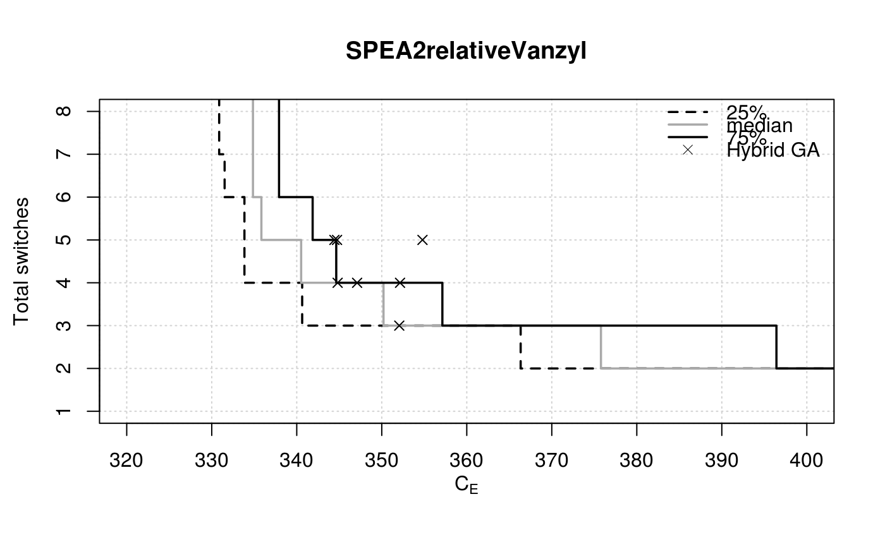

R/eaf-package.R
SPEA2relativeVanzyl.RdThe data has the only goal of providing an example of use of eafplot.
SPEA2relativeVanzyl
A data frame as produced by read_datasets().
Manuel López-Ibáñez. Operational Optimisation of Water Distribution Networks. PhD thesis, School of Engineering and the Built Environment, Edinburgh Napier University, UK, 2009.
data(HybridGA) data(SPEA2relativeVanzyl) eafplot(SPEA2relativeVanzyl, percentiles = c(25, 50, 75), xlab = expression(C[E]), ylab = "Total switches", xlim = c(320, 400), extra.points = HybridGA$vanzyl, extra.legend = "Hybrid GA")